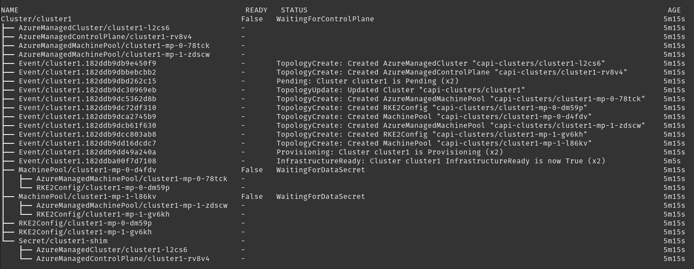

Rancher Turtles Troubleshooting
This guide provides troubleshooting steps for Rancher Turtles and Cluster API (CAPI) clusters. It covers common issues and their resolutions to help you maintain a stable and functional environment.
Before reading this guide, you can first look at the official troubleshooting documentation for the CAPI project.
Understanding the intricacies of both Rancher Turtles and CAPI is crucial for effective troubleshooting. This guide aims to equip you with the knowledge to diagnose and resolve basic problems in Rancher Turtles and CAPI.
Prerequisites
To effectively troubleshoot Rancher Turtles and CAPI clusters, you need:
-
Access to a terminal with kubectl configured to access Rancher management cluster
-
Krew plugin manager for kubectl installed
-
Helm CLI tool installed
You can install Krew by following the instructions at Krew installation guide.
How to check the logs
You can view the following pods and check their logs in namespaces:
| Namespace | Pod | Description |
|---|---|---|
rancher-turtles-system |
rancher-turtles-cluster-api-operator |
Manages the installation and lifecycle of Cluster API providers in the management cluster |
rancher-turtles-system |
rancher-turtles-controller-manager |
Handles Rancher integration and manages the custom resources for Turtles |
rancher-turtles-system |
caapf-controller-manager |
Controls the Cluster API Provider Framework for custom infrastructure providers |
capi-system |
capi-controller-manager |
Core Cluster API controller that reconciles main cluster resources |
rke2-bootstrap-system |
rke2-bootstrap-controller-manager |
Manages the bootstrap configuration for RKE2 nodes |
rke2-control-plane-system |
rke2-control-plane-controller-manager |
Handles the initialization and management of RKE2 control plane components |
*-system |
*-controller-manager |
Handles the initialization and management of Infrastructure provider components |
$-bootstrap-system |
$-bootstrap-controller-manager |
Manages the bootstrap configuration for custom providers |
$-control-plane-system |
$-control-plane-controller-manager |
Handles the initialization and management of custom providers control plane components |
'*' - depending on the infrastructure provider in use '$' - depending on controlplane/bootstrap provider in use, e.g. kubeadm or rke2
One way to monitor logs from Cluster API controll plane pods by usuing kubectl logs with label selector.
kubectl logs -l control-plane=controller-manager -n rancher-turtles-system -f
kubectl logs -l control-plane=controller-manager -n capi-system -f
kubectl logs -l control-plane=controller-manager -n rke2-bootstrap-system -f
kubectl logs -l control-plane=controller-manager -n rke2-control-plane-system -f|
Using kubectl krew to install the stern plugin involves third-party software which may pose security risks in production environments. While it’s a useful tool for log viewing, it should primarily be used in development or testing environments. Always review third-party plugins before installing them in sensitive or production clusters. |
The best method to monitor logs from different pods is by using the following method.
kubectl krew install sternThen you can tail logs from all pods in real time.
kubectl stern . -n rancher-turtles-system -n rke2-bootstrap-system -n rke2-control-plane-system -n capi-systemor
kubectl stern -A -l control-plane=controller-managerHow to manage Rancher Turtles and CAPI resources
List Rancher and Cluster API resources
Often users are asking how to deal with long list of different CRDs created by CAPI and Rancher, here is some idea how you can deal with it.
-
List all CAPI and Rancher related credentials
kubectl api-resources | grep 'cattle.io\|cluster.x-k8s.io' -
About the resource, you can get a full explanation of what it is doing or what the configuration options are
kubectl api-resources | grep clusterclass kubectl explain clusterclass.cluster.x-k8s.io -
Then you get a description about each field and configuration section
kubectl explain clusterclass.spec kubectl explain clusterclass.spec.controlPlane kubectl explain clusterclasses.spec.controlPlane.machineInfrastructure
List existing Rancher and Cluster API objects resources
The most common mistake is to use the default namespace in Kubernetes for your work. This will make your configuration really messy and difficult to manage and troubleshoot. It is highly recommended to use separate namespaces for deploying and creating CAPI downstream clusters and avoid using kubernetes system namespaces, such as default and kube-*.
When applying templates with kubectl, always specify -n <NAMESPACE> to provision resources in a known locaction. You can switch between namespaces in KUBECONFIG with command:
kubectl config view
kubectl config set-context --current --namespace <NAMESPACE>With separate namespaces, you can easily manage resources by following this method.
|
Using kubectl krew to install the lineage plugin involves third-party software which may pose security risks in production environments. While it’s a useful tool for log viewing, it should primarily be used in development or testing environments. Always review third-party plugins before installing them in sensitive or production clusters. |
-
Install
get-allandlineageplugins usingkrewforkubectlkubectl krew install lineage kubectl krew install get-all -
Then list all existing resources in for example
capi-clustersnamespace where your downstream cluster configuration was deployed.kubectl get-all -n capi-clustersExample output:
NAME NAMESPACE AGE configmap/kube-root-ca.crt capi-clusters 23h secret/cluster1-shim capi-clusters 32s serviceaccount/default capi-clusters 23h rke2config.bootstrap.cluster.x-k8s.io/cluster1-mp-0-dm59p capi-clusters 32s rke2config.bootstrap.cluster.x-k8s.io/cluster1-mp-1-gv6kh capi-clusters 32s rke2configtemplate.bootstrap.cluster.x-k8s.io/cluster1-pool0 capi-clusters 33s rke2configtemplate.bootstrap.cluster.x-k8s.io/cluster1-pool1 capi-clusters 33s clusterclass.cluster.x-k8s.io/clusterclass1 capi-clusters 33s cluster.cluster.x-k8s.io/cluster1 capi-clusters 32s machinepool.cluster.x-k8s.io/cluster1-mp-0-d4fdv capi-clusters 32s machinepool.cluster.x-k8s.io/cluster1-mp-1-l86kv capi-clusters 32s clustergroup.fleet.cattle.io/clusterclass1 capi-clusters 33s azureclusteridentity.infrastructure.cluster.x-k8s.io/cluster-identity capi-clusters 33s azuremanagedcluster.infrastructure.cluster.x-k8s.io/cluster1-l2cs6 capi-clusters 32s azuremanagedclustertemplate.infrastructure.cluster.x-k8s.io/cluster capi-clusters 33s azuremanagedcontrolplane.infrastructure.cluster.x-k8s.io/cluster1-rv8v4 capi-clusters 32s azuremanagedcontrolplanetemplate.infrastructure.cluster.x-k8s.io/cluster1-control-plane capi-clusters 33s azuremanagedmachinepool.infrastructure.cluster.x-k8s.io/cluster1-mp-0-78tck capi-clusters 32s azuremanagedmachinepool.infrastructure.cluster.x-k8s.io/cluster1-mp-1-zdscw capi-clusters 32s azuremanagedmachinepooltemplate.infrastructure.cluster.x-k8s.io/cluster1-pool0 capi-clusters 33s azuremanagedmachinepooltemplate.infrastructure.cluster.x-k8s.io/cluster1-pool1 capi-clusters 33s -
Then you can check what the relation is between all object resources
kubectl lineage -n capi-clusters cluster.cluster.x-k8s.io/cluster1Output:

How to enable debug mode for Rancher Turtles and CAPI operators
The helm chart exposes values for increasing the log level via the usual values.yaml configuration parameters:
-
Cluster API Operator - log level for CAPI operator can also be increased using helm chart, if installed with Rancher Turtles chart use:
--set cluster-api-operator.logLevel=5
--set rancherTurtles.managerArguments[0]="-v=5"For example:
helm upgrade rancher-turtles turtles/rancher-turtles \
-n rancher-turtles-system \
--reuse-values \
--set "rancherTurtles.managerArguments={--insecure-skip-verify,-v=5}" \
--set cluster-api-operator.logLevel=5-
Cluster API Providers - edit CAPIProvider resources for providers where increasing log level is needed. Change to desidered level:
CAPIProvider.Spec.Manager.Verbosity=5(5 is equivalent to DEBUG)
How to collect information from Rancher Turtles and CAPI
crust-gather is a project created by Cluster API developers specifically designed for gathering logs and resource states from CAPI environments. It’s a safe and official tool that can be used in any type of environment (development, testing, or production) to collect comprehensive diagnostic information for troubleshooting.
You can install it via following instructions:
kubectl krew install crust-gather
kubectl crust-gather --helpAlternatively, it can be installed standalone via install.sh script:
curl -sSfL https://github.com/crust-gather/crust-gather/raw/main/install.sh | sh
crust-gather --helpYou can specify a list of filters to collect data. By default it takes a full cluster snapshot. Data is stored in crust-gather dir by default. Crust gather accepts a pre-defined filter configs for Rancher or child cluster. Kubeconfig should point to the correct cluster. Usage with config file:
kubectl crust-gather collect-from-config -c config.yamlUsage via regular flags:
kubectl crust-gather collect --include-namespace rancher-turtles-system --include-namespace capi-* --include-namespace cattle* --include-namespace c-* --include-namespace=<any-capi-cluster-namespace> --kubeconfig=<KUBECONFIG>You can specify a file with secrets or environment variables with secrets strings to exclude.
For example:
kubectl crust-gather collect -s ENV_WITH_SECRET --secrets-file=secrets.txtOr exclude all secret resources from collection:
kubectl crust-gather collect --exclude-kind SecretHow to clean up Rancher Turtles and CAPI resources
Sometimes cleanup of your infrastructure might fail and it might lead to pending resources. In this situation, we have to remove resources manually.
Keep in mind, that removal of finalizers manually will require to perform manual cleanup of provisioned resources by the infrastructure provider.
export NAMESPACE=capi-clusters
for RESOURCE in `kubectl get-all -n $NAMESPACE -o name | grep 'cattle.io\|cluster.x-k8s.io'`;
do
echo "Patching $RESOURCE in namespace $NAMESPACE";
kubectl patch $RESOURCE -n $NAMESPACE -p '{"metadata":{"finalizers":[]}}' --type=merge;
kubectl delete $RESOURCE -n $NAMESPACE;
doneHow to uninstall Rancher Turtles and CAPI project
To uninstall Rancher Turtles and CAPI components from your management cluster, follow these steps in order:
-
First, delete all downstream clusters created with CAPI. For each cluster:
kubectl delete -n capi-clusters cluster.cluster.x-k8s.io cluster1Replace
capi-clusterswith the namespace where your clusters are deployed andcluster1with your cluster name. Wait for each cluster to be fully deleted before proceeding to the next step. -
Uninstall the Rancher Turtles Helm chart:
helm uninstall -n rancher-turtles-system rancher-turtles -
Remove any webhook configurations that might have been created by CAPI providers:
# List all webhook configurations kubectl get validatingwebhookconfigurations.admissionregistration.k8s.io # Delete provider-specific webhooks (examples) kubectl delete validatingwebhookconfigurations.admissionregistration.k8s.io azureserviceoperator-validating-webhook-configuration kubectl delete validatingwebhookconfigurations.admissionregistration.k8s.io capz-validating-webhook-configuration kubectl delete validatingwebhookconfigurations.admissionregistration.k8s.io capi-validating-webhook-configuration kubectl delete validatingwebhookconfigurations.admissionregistration.k8s.io rke2-webhook-configuration # Also check and delete mutating webhooks if present kubectl get mutatingwebhookconfigurations kubectl delete mutatingwebhookconfigurations [webhook-name] -
Clean up any leftover namespaces and resources. The following namespaces may remain after uninstallation:
-
rancher-turtles-system
-
rke2-bootstrap-system
-
rke2-control-plane-system
-
capi-system
-
capz-system (or other provider-specific namespaces like capv-system, capa-system, etc.)
-
capi-clusters (or other namespaces where you deployed clusters)
To remove these namespaces:
# First remove any finalizers that might be blocking deletion for NS in rancher-turtles-system rke2-bootstrap-system rke2-control-plane-system capi-system capz-system capi-clusters; do kubectl get namespace $NS -o json | jq '.spec.finalizers = []' | kubectl replace --raw "/api/v1/namespaces/$NS/finalize" -f - done # Then delete the namespaces kubectl delete namespace rancher-turtles-system rke2-bootstrap-system rke2-control-plane-system capi-system capz-system capi-clusters
-
-
Finally, remove the CRDs related to Cluster API and Rancher Turtles:
# Delete all Cluster API and Rancher Turtles CRDs kubectl get crds | grep 'cluster.x-k8s.io\|turtles-capi.cattle.io' | awk '{print $1}' | xargs kubectl delete crd # Or manually delete them one by one kubectl delete crd clusters.cluster.x-k8s.io kubectl delete crd clusterclasses.cluster.x-k8s.io kubectl delete crd machines.cluster.x-k8s.io kubectl delete crd machinepools.cluster.x-k8s.io kubectl delete crd providers.turtles-capi.cattle.io kubectl delete crd clusterconfigs.turtles-capi.cattle.io # ... and other related CRDsEnsure all clusters are completely deleted before removing these CRDs, or you may leave orphaned cloud resources.